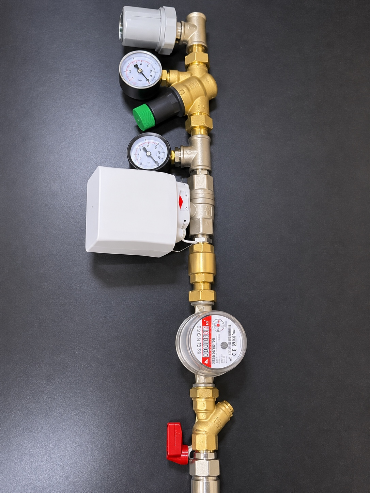
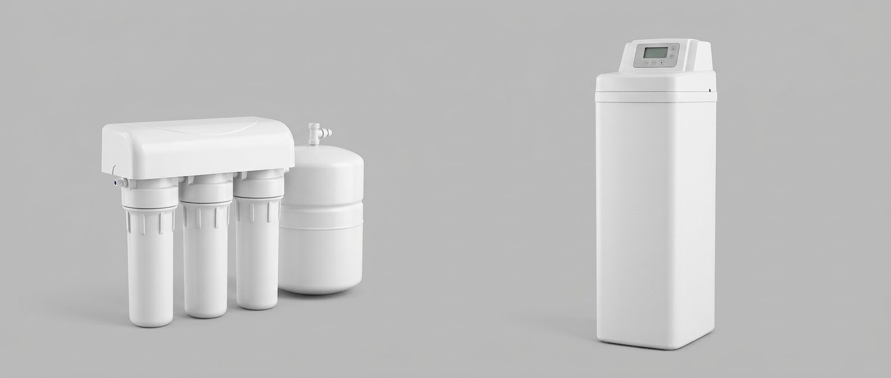
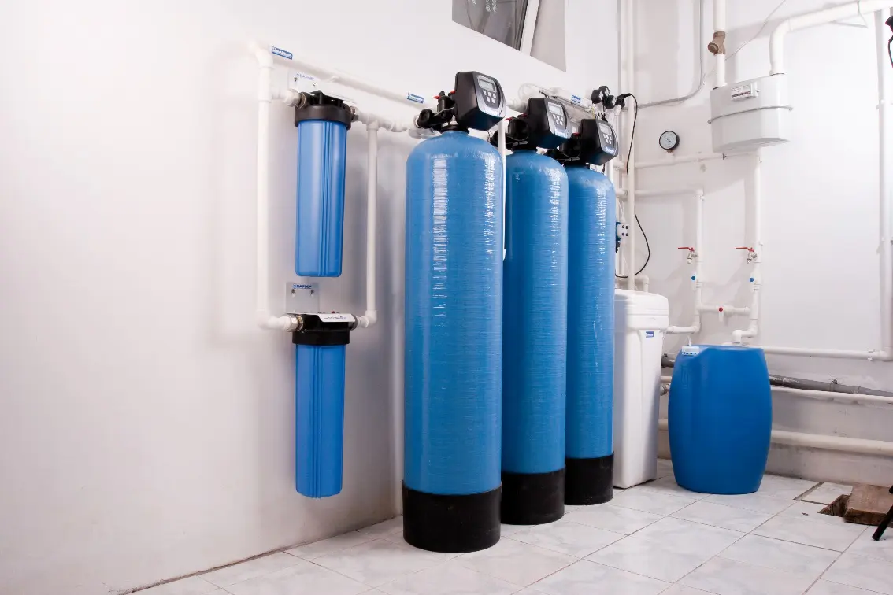
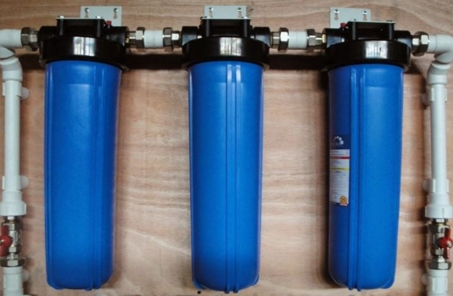
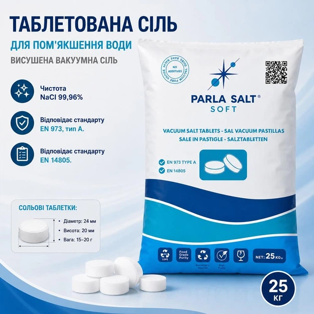

Чиста та м'яка вода у вашому домі під ключ
Підбираємо, встановлюємо та обслуговуємо системи очистки води для квартир, приватних будинків зі свердловинами та комерційних об'єктів. Офіційний дистриб'ютор таблетованої солі PARLA (Туреччина).
- Підбір за аналізом водиТочно розраховуємо завантаження колон під вашу свердловину
- Монтаж під ключПравильний ввідний вузол, врізка, налаштування та запуск
- Офіційний дистриб'ютор ParlaТурецька таблетована сіль від 10 мішків за гуртовою ціною
- Доставка від 20 мішківБезкоштовно привеземо сіль по Тернополю та околицях
Відправити воду на аналіз
Хімічний аналіз води (жорсткість, залізо, марганець, сірководень, нітрати, pH) дозволяє підібрати систему очистки з першого разу — без переплат за зайві засипки.
Як правильно набрати пробу води:
Підійде пляшка з-під звичайної негазованої питної води (не з-під соків, солодких напоїв чи пива). Ополосніть її водою, яку здаєте на аналіз.
Відкрийте кран і дайте воді стекти, щоб у пляшку потрапила свіжа вода безпосередньо зі свердловини, криниці чи водопроводу.
Наливайте тонкою цівкою по стінці пляшки. Перед закручуванням злегка стисніть пляшку, щоб витіснити все повітря, і щільно закрийте кришку.
Привезіть пробу води в наш магазин
Напишіть спеціалісту Івану, коли плануєте привезти пробу, — він підготує приймання та підкаже, на що звернути увагу.
Визначте проблему води за симптомами
Оберіть одну або кілька ознак, які ви помічаєте у своїй воді — система підкаже, що саме міститься у воді та яке обладнання вирішить проблему.
Солі кальцію та магнію утворюють накип
Для Тернополя та області це найпоширеніша проблема. Накип на тенах бойлера та теплообміннику котла збільшує витрату газу й електрики на 15–25% і виводить техніку з ладу. Рішення — колона пом'якшення води з іонообмінною смолою та таблетованою сіллю PARLA.
Привезіть 1,5 л води у чистій пляшці в магазин (Великі Гаї, вул. Об'їзна, 19) або зателефонуйте інженеру.
Водоочистка • Іван: 096 968 91 03 Написати Івану в TelegramСкільки грошей і сил економить домашній зворотний осмос?
Порівняйте витрати на купівлю бутильованої чи розливної води з вартістю 1 літра чистої води з власного зворотного осмосу на кухні.
- Жодних важких баклажок і черг: чиста вода тече з окремого крана на мийці 24/7 — у дощ, сніг чи вночі.
- Завжди свіжа вода без застою у пластику: фільтрується безпосередньо перед подачею у склянку чи чайник.
- Без накипу в чайнику та кавомашині: система з мінералізатором дає збалансовану за смаком воду для дітей і кави.
Що міститься у воді: Квартира vs Приватний будинок
Склад води в центральному міському водопроводі та у власній свердловині суттєво відрізняється, тому й схеми очищення підбираються по-різному.
Що зазвичай є у міській воді Тернополя:
Вода проходить очистку на водоканалі, тому в ній немає сірководню чи великої кількості заліза, але є інші типові домішки:
- Висока жорсткість (кальцій і магній)Залишає білий наліт на змішувачах, душовій кабіні та утворює накип у бойлері й кавомашині.
- Залишковий хлор та хлорорганікаВикористовуються для знезараження міських мереж; дають характерний запах та пересушують шкіру після душу.
- Вторинне забруднення зі старих трубІржа, окалина та каламутність після ремонтних робіт або відключень водопостачання.
Компактний захист сантехніки та питна вода
Що зазвичай міститься у воді зі свердловини чи колодязя:
Вода зі свердловини не містить хлору, але її хімічний склад залежить від водоносного горизонту у вашому районі:
- Розчинене залізо та марганецьЗі свердловини вода може текти прозорою, але через 15 хвилин на повітрі жовтіє та залишає рудий осад.
- Сірководень (неприємний запах)Природний газ у глибоких свердловинах без доступу кисню; надає воді запаху «тухлих яєць».
- Екстремальна жорсткість та нітратиСолі жорсткості швидко руйнують теплообмінник котла, а нітрати (особливо у колодязях) не видаляються кип'ятінням.
Комплексна водопідготовка всього будинку
Правильна схема вводу води у квартиру чи будинок
Надійна водоочистка починається ще до фільтрів. Натискайте на номери на фото або на пункти праворуч, щоб побачити, як кожен вузол захищає ваше житло від затоплення та гідроударів.

Головний запірний елемент на вході магістралі. Дозволяє миттєво перекрити подачу води на всю квартиру чи будинок для обслуговування системи.
Затримує великі механічні частинки — пісок, іржу та окалину зі стояка, захищаючи крильчатку лічильника від заклинювання та поломки.
Вузол точного обліку споживання води (встановлюється на вводі в квартиру або згідно з вимогами водоканалу під пломбування).
Не дає воді повертатися назад у загальний стояк при падінні тиску в мережі та запобігає перетіканню гарячої води в холодну через змішувачі.
Надійний захист від затоплення: як тільки бездротовий датчик зафіксує вологу під пральною машиною, ванною чи мийкою, електропривід за 5 секунд перекриє воду і надішле сповіщення на телефон.
Показує реальний вхідний тиск у магістралі до редуктора, щоб контролювати перепади тиску в міській мережі чи після насоса.
Знижує та стабілізує тиск у системі житла на безпечному рівні (зазвичай 3–3,5 бар), захищаючи шланги змішувачів, бойлер та побутову техніку від розриву.
Гасить різкі стрибки тиску, що виникають при швидкому закритті кульових кранів або клапанів пральної машини — прибирає стукіт у трубах.
Після повного захисту від потопу, піску та стрибків тиску вода подається на магістральні колби, колону пом'якшення / знезалізнення (із сіллю PARLA) та зворотний осмос.
Таблетована сіль для пом'якшення води PARLA (Туреччина)
«Євротерм-Тернопіль» — офіційний дистриб'ютор бренду PARLA. Постачаємо оригінальну турецьку таблетовану сіль у мішках по 25 кг для побутових і промислових систем водоочистки.
Чому для систем пом'якшення води варто обирати саме турецьку сіль PARLA?
Якість таблетованої солі напряму впливає на ресурс іонообмінної смоли та безвідмовну роботу керуючого клапана вашої колони водоочистки. Дешева технічна сіль часто містить домішки глини, піску та нерозчинних солей, які з часом утворюють щільний «сольовий міст» на дні бака і виводять систему з ладу.
Таблетована сіль PARLA виготовляється в Туреччині з високоочищеної харчової виварної сировини (вакуум-виварної солі категорії «Екстра» з вмістом хлориду натрію не менше 99,7%). Завдяки пресуванню під високим тиском кожна таблетка має правильну циліндричну форму зі скошеними краями та оптимальну щільність:
- Без осаду в баку: розчиняється на 100% без мулу, нальоту та злежування на дні сольового фідера.
- Рівномірне «танення»: таблетки не кришаться і не перетворюються на кашу під час регенерації.
- Захист смоли та клапана: подовжує термін служби засипки Ecomix / Dowex на роки.
- Прямі поставки: як офіційний дистриб'ютор PARLA, гарантуємо свіжу партію та чесну ціну без посередників.
Обладнання та матеріали для водоочистки
Натисніть на потрібний тип фільтрації, щоб переглянути бренди в наявності, або зателефонуйте спеціалісту водоочистки Івану: 096 968 91 03.

Питна вода (Осмос)
Багатоступеневе очищення питної води під мийку з мінералізатором або помпою (Ecosoft, Filtrons).

Колони та пом'якшувачі
Видалення жорсткості (накипу), заліза, марганцю, сірководню та амонію для всього будинку.

Магістральні фільтри
Фільтри механічної очистки Big Blue, самопромивні фільтри Honeywell, редуктори та захист Ajax.

Таблетована сіль PARLA
Офіційний дистриб'ютор. Від 10 мішків — гурт, від 20 мішків — безкоштовна доставка по Тернополю та околицях.
Замовте сіль PARLA або підбір системи очистки
Напишіть нам щодо таблетованої солі PARLA (Туреччина), монтаж ввідного вузла чи підбір системи фільтрації води. Від 10 мішків діє гуртова ціна, а від 20 мішків — безкоштовна доставка по Тернополю та околицях.
Напишіть спеціалісту Івану
Сіль PARLA, підбір фільтрів, монтаж ввідного вузла чи запис на аналіз води — напишіть в зручний месенджер.
Відповідаємо у робочий час: Пн–Пт 09:00–18:00, Сб 09:00–13:00.